귀여운데,
도대체 왜?!
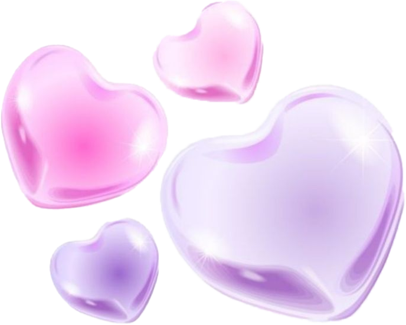
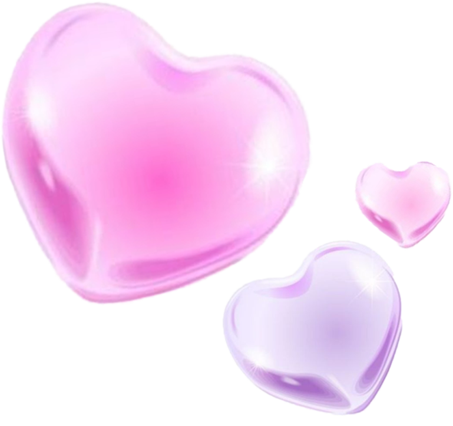
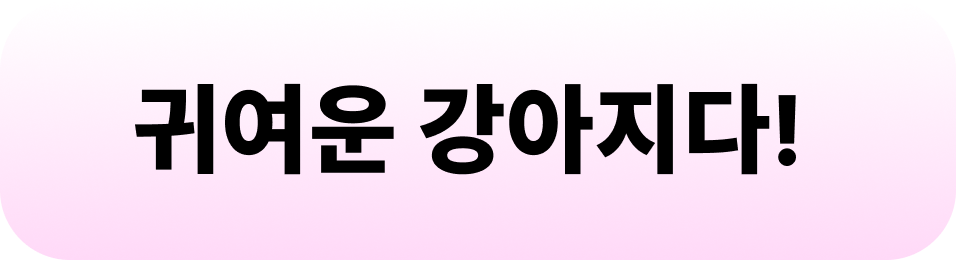
 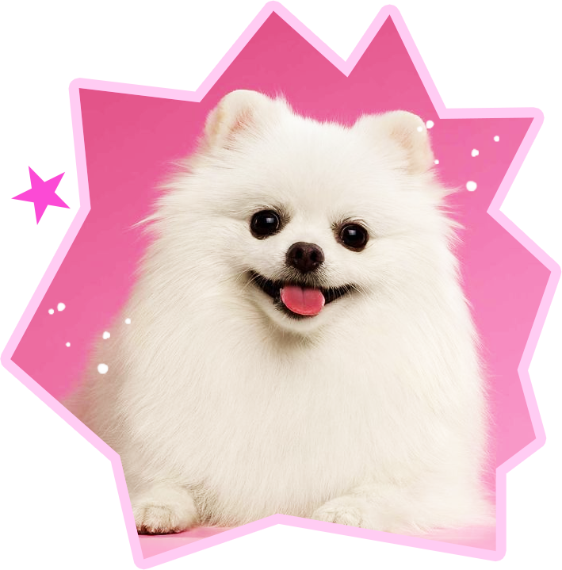
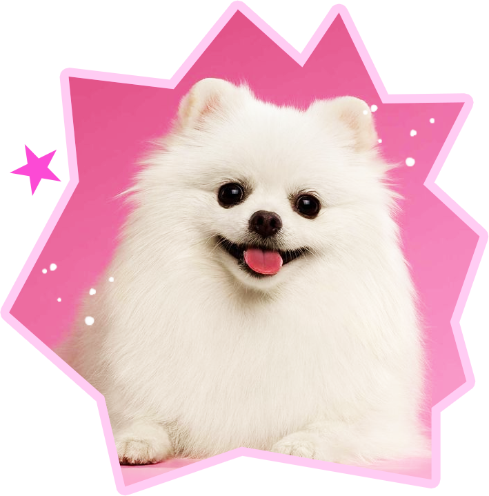

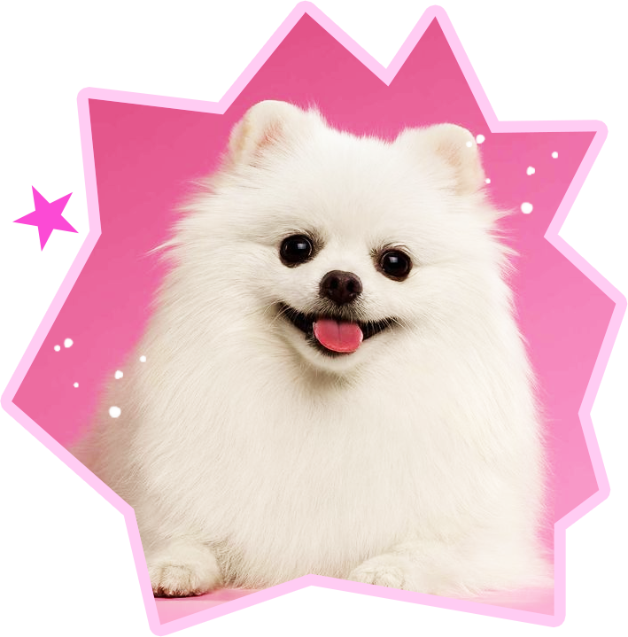
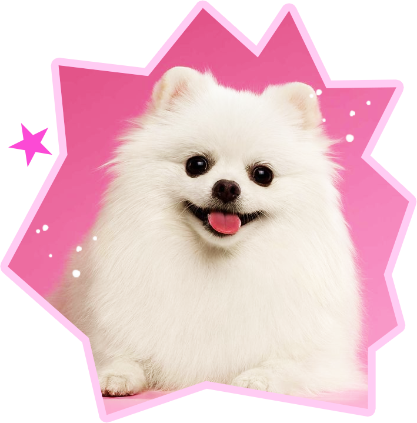
귀여운 아기, 강아지, 고양이, 최애 아이돌 등등…
이들을 보면 우리는 미소를 짓지만, 동시에 “꼬집고 싶다!!” 같은 표현이 튀어나오기도 해.
이건 이상한 게 아니라 인간 모두에게 나타나는 자연스러운 본능이야.
바로 감정의 항상성(homeostasis) 때문이지.
다시 말해, 불균형을 해소하고 항상 일정한 상태를 유지하려는 경향성을 말하는 거야.
올림픽에서 금메달을 딴 선수들이 기쁨의 눈물을 흘리는 장면, 본 적 있지?
감정이 폭발하면, 우리의 몸은 반대 감정으로 충격을 완화해 균형을 맞추려 해.
특히 이런 마음의 평정심을 유지하려는 경향은 한국 사람들이 유독 강한데,
균형을 중시하는 동양 문화의 영향 때문이라는 이야기가 있어.
실제로 외국 기자들은 한국 선수들이 메달을 따고 한결같이 눈물을 보이는 모습에 종종 신기해한다고 하더라고!
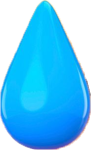
야생동물들에게도 귀여움은 살아남기 위한
필수 전략이 되어버렸다는 사실! 들어본 적 있어?
2016년 호주의 머독 대학에서 연구를 진행하였는데
그 결과, 못생긴 동물이 멸종하기 더 쉽다는 사실을 발표했어.
호주의 동물들을 분석한 결과, 못생긴 동물보다는
귀여운 동물들에 대한 연구 및 지원이 더 많았기 때문이야.
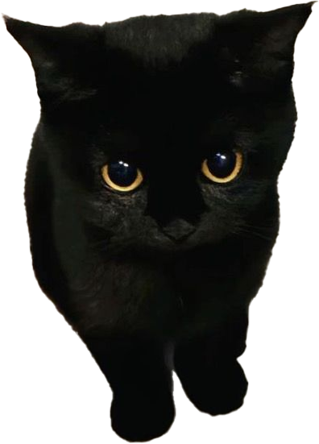 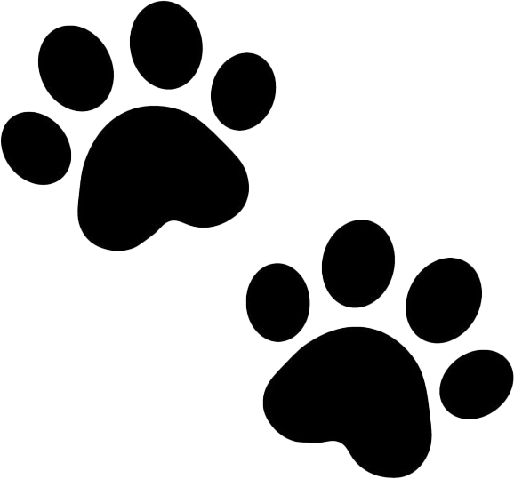
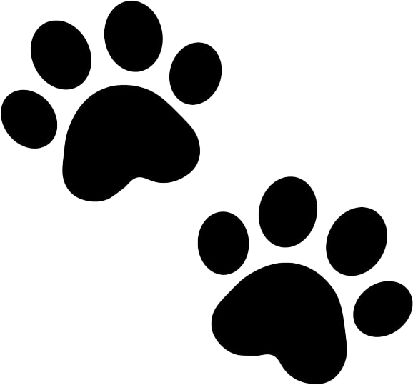
못생긴 동물들은 기록하는 정도에서 그치는 경우가 많아.
일반 사람들의 관심이 귀여운 동물들에 비해 상대적으로 덜하거든.
이에 못생긴 동물들을 보호하기 위해 Ugly Animal Preservation Society,
다시 말하자면 못생긴 동물 보호 단체가 설립되기도 했지.
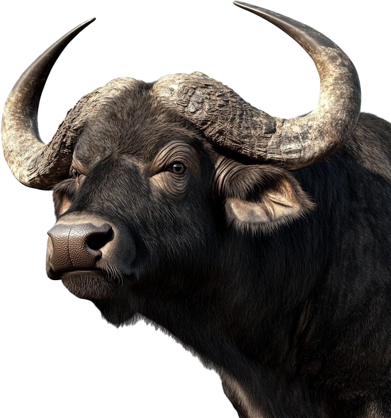 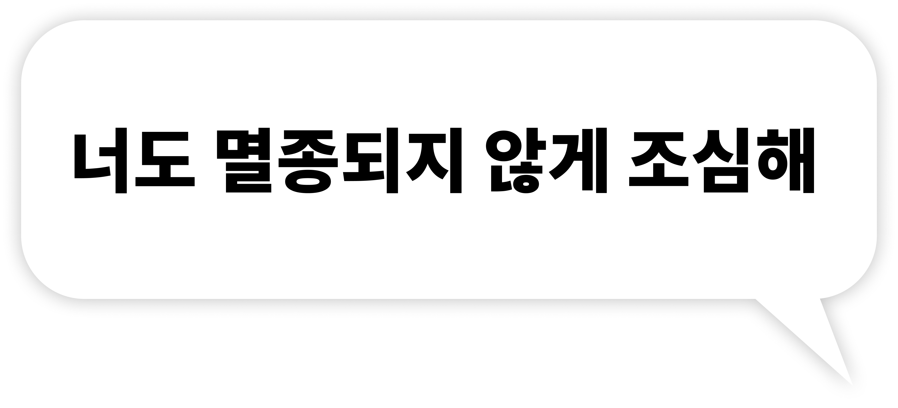내 차를 아기처럼 사랑하게 만드는 방법? 간단해.
둥근 헤드라이트(큰 눈), 짧은 차체(짧은 사지)를 통해 아기 도식을 자극하는거야!
차량을 단순한 기계가 아닌 '보호해야 할 취약한 존재'로 무의식적으로 인식하게 만들어.
단순한 방법처럼 보이지만, 이는 강력한 브랜드 애착과 충성도를 구축하며, 결함에도 너그러워지게 만들어.
 
헬로키티, 리락쿠마, 미니언즈... 이런 캐릭터를 보면 사고 싶다는 생각, 들어봤지?
아기 도식을 극대화한 캐릭터는 뇌의 보상 회로를 강력하게 활성화해.
귀여운 제품은 가격 민감도를 낮추고, 소비자가 프리미엄 가격,
'Cute Tax'를 기꺼이 지불하게 만들어.
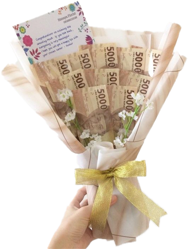1990년대 큰 인기를 끌었던 다마고치 역시 마찬가지야.
사용자가 펫을 돌보지 않으면 펫이 죽거나 아프게 되어버리는데,
이 취약성이 사용자의 책임감과 애착을 강하게 유발해
이러한 디자인은 게임이나 제품 사용을 지속하게 만들고,
관련 액세서리나 후속 제품 구매로 이어지는 장기적인 참여를 유도하지.
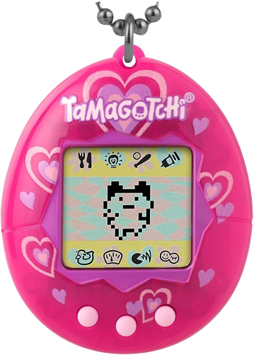귀여움을 느낄 때 튀어나오는 공격적인 감정은 사실 그 대상을 지키고 싶은 강한 애정의 표현이야.
그러니 앞으로는 누군가 귀여움에 폭발할 때,
그 순간의 감정 속에 진심 어린 애정과 보호 마음이 담겨 있다는 것을
떠올리며 바라보는 건 어떨까?